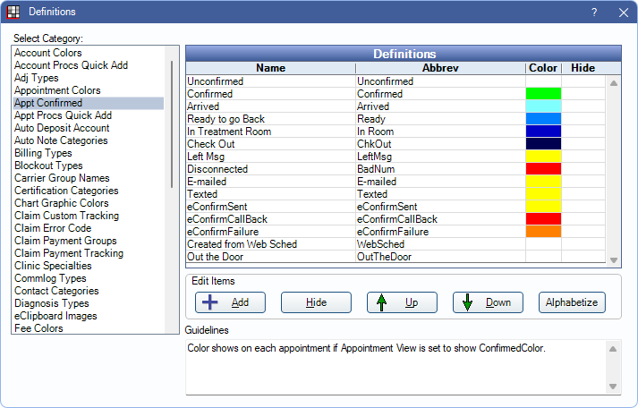

Definitions: Appt Confirmed
Determine available appointment confirmation statuses and customize with Appt Confirm definitions.
In the Main Menu, click Setup, Definitions, Appt Confirmed.
Confirmation Status options and colors can be customized. The status listed first is the default for all new appointments.
The following default status options apply to eServices. To set defaults for each action, see Automated Messaging Advanced Settings.
- eConfirmSent: The status typically applied when an eConfirmation is sent.
- eConfirmCallBack: The status typically applied when patient requests a call back on an eConfirmation.
- eConfirmFailure: The status applied when there is an eConfirmation delivery failure.
- Created from Web Sched: The status typically applied when an appointment is scheduled using Web Sched Recall or Web Sched New Patient.
Double-click an existing item to edit or click Add to create a new item. The Edit Definition window opens.

- Hidden: Check to hide this status.
- Name: Enter a description for the status.
- Abbrev: Enter the abbreviation of the status. Displays in the Appointments Module Confirmation Status pick list.
- Color: Click the color box to associate a color with this status. Displays when the Confirmed Color row is added to an Appointment View.
- eConfirmations: Set whether this status should affect the sending of eConfirmations or the automatic update of confirmation status.
- Send: When checked, appointments with this status are sent eConfirmations.
- Change Status: When checked, the appointments with this status will have their status updated if an eConfirmation is sent.
- eReminders: Set whether this status should affect the sending of eReminders.
- Send: When checked, appointments with this status are sent eReminders.
- Arrivals: Set whether this status should affect the sending of Arrivals.
- Send: When checked, appointments with this status are sent arrival messages.
- Send response: When checked, appointments with this status will have their status updated if an arrival is responded to.
- Automated Thank-You:
- Send: When checked, appointments with this status are sent Automated Thank-Yous.
- eClipboard: Set whether this status should affect patients using eClipboard.
- Change on check-in: When checked, appointments with this status are changed when checking in via eClipboard.
- Enable BYOD: When checked, appointments with this status can be sent a BYOD link.
- General Messages: Set whether this status should affect patients being sent General Messages.
- Send: When checked, appointments with this status are sent general messages.
The options associated with eServices are disabled for statuses set as Waiting Room triggers in Preferences.
Click Save to exit the window and keep changes.